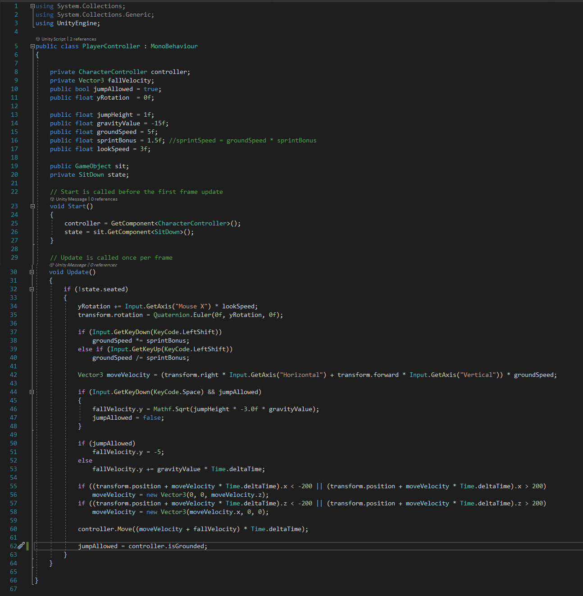
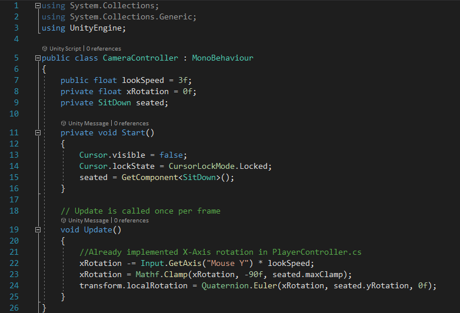
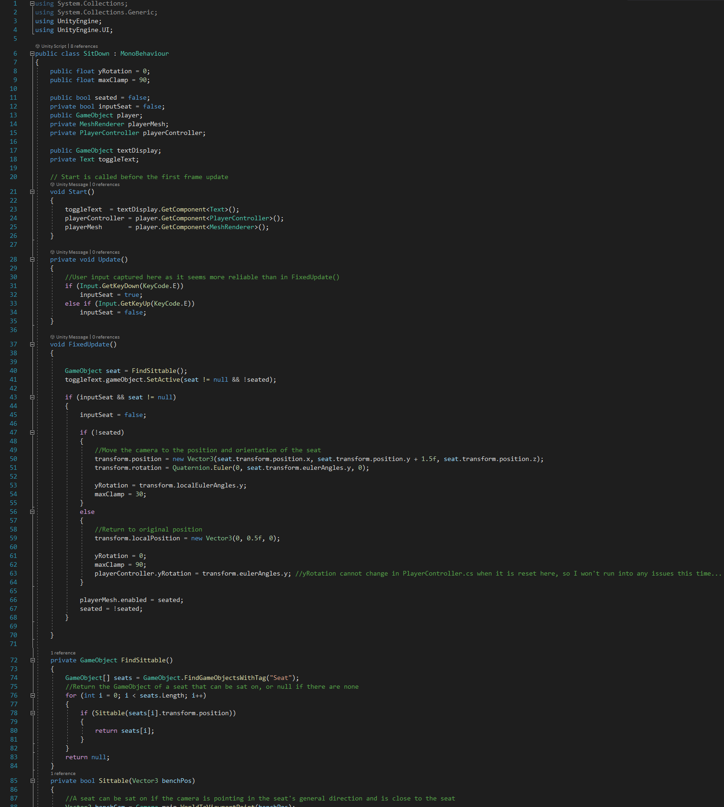
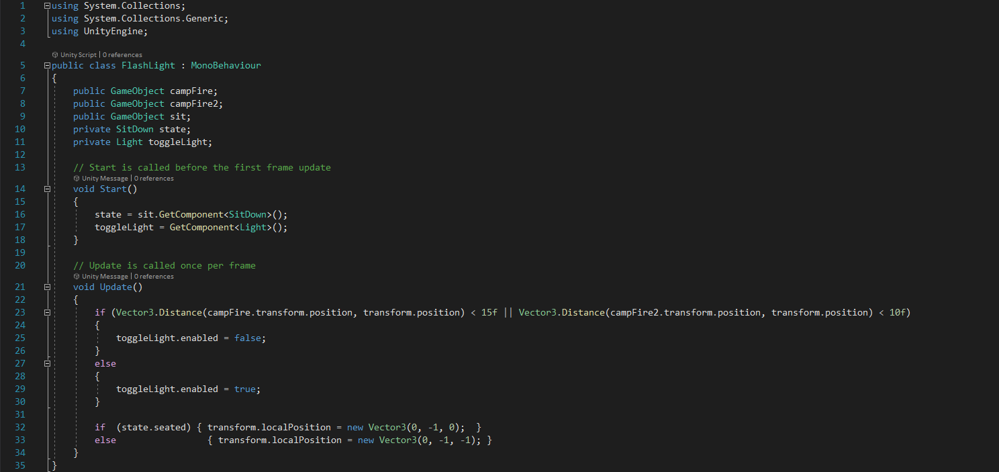

Player Controller
As the script name suggests, this script controls how the player can move through the forest. I'm not sure whether the player needs a sprint button,
but I found it convenient to be able to walk slowly around the fires, and quickly around the forest.
I implemented my own gravity force allowing me tighter control over how the player feels to move.
I had an issue where the isGrounded function (line 62 below) was not reliable, but after trying to create
my own isGrounded function and then doing some Googling, I realised the force of gravity must be applied even when the player
is on the ground for the function to work properly.
Lines 55-58 (below) are to make sure the player is not walking out of bounds.
The actual forest is 250x250 but the player is only allowed in a 200x200 zone, creating the illusion
that the forest doesn't end, but where the player can explore does, kind of like in the Hunger Games, it seemed the most convenient way to stop the player at the boundary.
This also allowed me to create a metaphor with the trodden path extending beyond the bounds of the player, there is no meaningful destination for those following predefined
routes through life, and not their own; in fact, there is no destination, only more path, because they never really knew where they wanted to go in the first place.
Click the code below to download the C# file:

Camera Controller
As the script name also suggests, this script controls how the player can move the camera.
For simplicity, I made the camera a child object of the player object, so the camera
would always follow the player. This includes yaw rotation, however, it would be unnatural for the player object to rotate around the pitch axis, as typically only heads and not entire bodies
rotate around this axis in games (and reality for that matter). So I created a script allowing the camera to additionally rotate around the pitch axis.
Also like in reality and games (I'm starting to see a trend here...), I limited the pitch rotation to ±90° of looking forward.
I find it fascinating how ignorant I was before I made this game as to the subtleties of game design, such as limiting the camera rotation. Perhaps it is in these subtleties that
game design can be innovated for unique experiences.
Learning for myself the process of making games has certainly helped me appreciate how mammoth the task is of creating the games I play, or in fact creating any software.
Click the code below to download the C# file:

Sit Down
This script enables the player to sit down on logs.
As I was saying in the Camera Controller "chapter", I never appreciated how tedious it is to make a game, I am still surprised simply allowing the player to sit down on logs
required me to write 91 lines of code.
In the script I allowed the player to be able to sit on any log with the tag: "Seat" if they are looking at it and are close enough to it. Using the tag system was really useful
as it allowed me to easily differentiate logs from other gameObjects, and logs Robots were occupying from logs that were available to sit on.
Click the code below to download the C# file:

Flash Light
This script checks whether the player's flashlight should be on or off.
I could've assigned this role to a keyboard button, but I decided that I wanted the campfires to always seem cosy and "safe", and automatically turning the player's flashlight
off when they were close enough helped achieve this.
The script also repositions the flashlight to above any logs the player is sitting on, to make sure it doesn't cast shadows from said log onto the surroundings.
Click the code below to download the C# file:

<
Contents:
Click to jump to chapter: